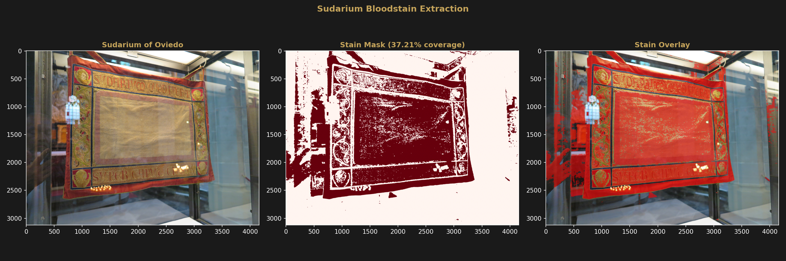
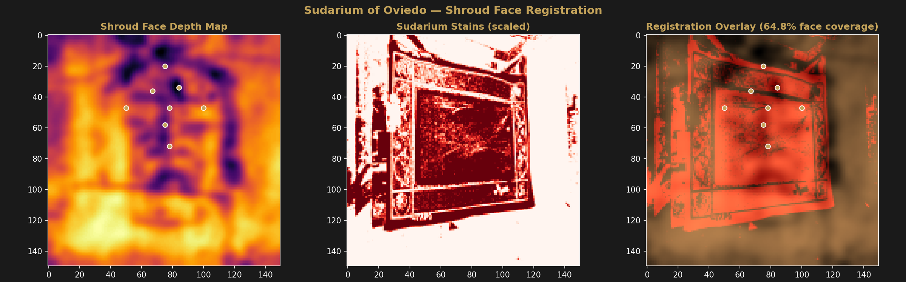
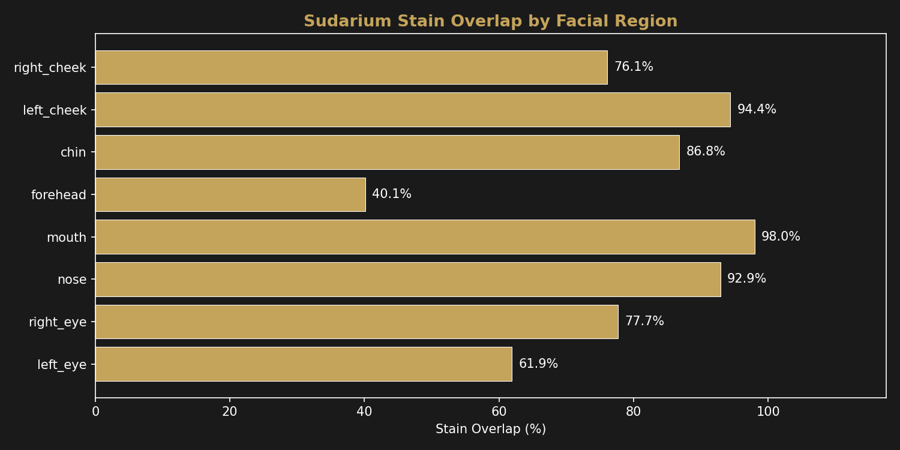

Cross-Reference
Sudarium of Oviedo
Computational comparison of bloodstain patterns on the Sudarium of Oviedo with the Shroud facial depth map.
What is the Sudarium?
The Sudarium of Oviedo is a bloodstained cloth kept in the Cámara Santa of the Cathedral of Oviedo, Spain. Tradition identifies it as the face cloth mentioned in John 20:7 — a separate piece from the burial linen. The cloth measures approximately 84×53 cm and bears visible bloodstain patterns but no body image.
The Sudarium is relevant to this project because if both cloths covered the same face, the bloodstain positions on the Sudarium should correspond to facial features on the Shroud. This is a testable geometric claim.
Stain Extraction
Bloodstain regions were extracted from a 4160×3120 Wikimedia Commons photograph of the Sudarium using HSV color thresholding (Hue 0–20 and 160–180, Saturation 40–255, Value 30–200) targeting brownish-red regions on linen. Morphological opening and closing were applied for noise reduction.
The extracted stain mask covers 37.21% of the image area across 867 distinct regions.

Registration with Shroud Face
The Sudarium stain mask was scaled to 150×150 pixels to match the Shroud face depth map. Overlap was computed at eight facial landmark regions (8-pixel radius circular ROIs centered on landmarks from the Shroud depth map).
| Region | Stain Overlap |
|---|---|
| Mouth | 98.0% |
| Left cheek | 94.4% |
| Nose | 92.9% |
| Chin | 86.8% |
| Right eye | 77.7% |
| Right cheek | 76.1% |
| Left eye | 61.9% |
| Forehead | 40.1% |
Overall face region stain coverage: 64.8%.
Methodological Caution
The stain mask covers 37.21% of the total image area. At this coverage level, random overlap with any face-shaped region would be substantial. These percentages should not be interpreted as evidence that both cloths covered the same face without a proper null-hypothesis test — for example, computing overlap at randomized registration offsets to establish a baseline expected overlap by chance. This analysis is exploratory.


Limitations
This analysis has significant methodological limitations:
- Registration method: Simple scaling assumes the Sudarium and Shroud face are the same size and orientation. No feature-based alignment, rotation correction, or geometric transformation was applied. A proper registration would require identifying corresponding anatomical features on both cloths.
- Source photograph: The Sudarium photograph from Wikimedia Commons may not represent the cloth accurately — color reproduction, lighting angle, and photographic distortion all affect stain extraction.
- Color thresholding: HSV thresholding for brownish-red regions cannot distinguish between blood, oxidation stains, water marks, and other discolorations. The 37.21% coverage likely includes non-blood regions.
- Scale assumption: The Sudarium photograph shows the cloth in a display frame. The mapping from photograph coordinates to cloth coordinates to face coordinates involves multiple untested assumptions.
- Overlap interpretation: High overlap percentages do not demonstrate that both cloths covered the same face. Any face-sized stain pattern overlaid on a face-shaped target will produce some overlap.